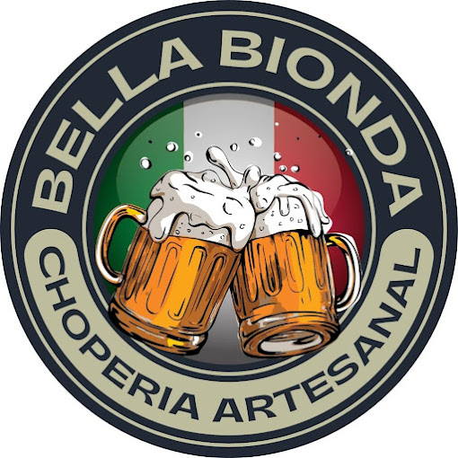

Pontos Turisticos de Cachoeira Paulista
Canção Nova

A Canção Nova é uma das maiores comunidades Católica do Brasil. Atualmente, o complexo religioso ocupa uma área de aproximadamente 370 mil m2.Além disso, a Canção Nova possui uma infraestrutura própria de televisão e rádio de grande alcance, atendendo até mesmo outros países.
O Complexo religiosos da Canção Nova, pode receber mais de 80 mil pessoas. É considerado como um dos maiores complexos de eventos católicos da América Latina.
Parque Ecológico

O Parque Ecológico Nelson Lorena, na região de Cachoeira Paulista, abrange uma área de aproximadamente 15.000 m2. Sua estrutura conta com: 4 lagos, parque infantil, espaço cultural, um rica fauna e flora e quiosques.
Vale destacar ainda, a Casa do Artesão, que expõe trabalhos artesanais, e está situada dentro das dependências do Parque.
Antiga Estação Ferroviária

Na cidade de Cachoeira Paulista, você irá se encantar com a antiga Estação Ferroviária, que foi por muito tempo, um dos pontos de ligação da Estrada de Ferroviária D. Pedro II, que unia através de um troço ferroviário, da cidade de São Paulo a cidade de Rio de Janeiro.
Vale destacar que a construção da Estação Ferroviária de Cachoeira Paulista, ocorreu em 1877, para atender às necessidades da produção de café regional.
Cervejaria Bella Bionda
Mas, sem dúvida, a melhor parte de uma visita à Cachoeira Paulista é poder degustar uma Bella Bionda. Uma cerveja artesanal feita na cidade, com ingredientes de primeira qualidade.
A cervejaria produz diversos tipos de cerveja, dentre eles: Lager, Pilsen, IPA, Witbier, Fruitbier, Sour e Weiss.
Outros lugares interessantes...
- O Teatro Municipal.
- O Pontilhão de Ferro
- O mirante Padre Leo
- O santuário nacional de Santa Cabeça
- Capela São Bento
- E mais!